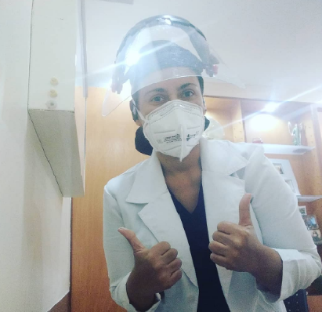
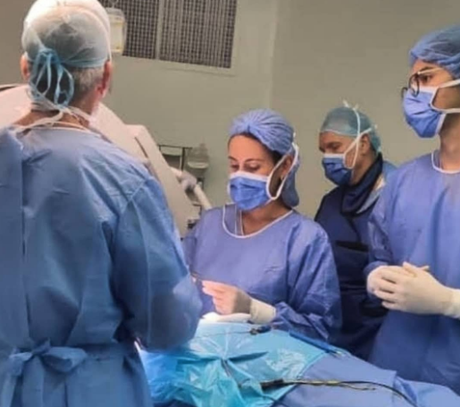
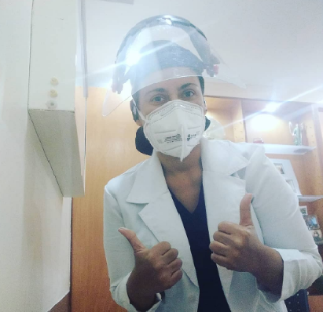
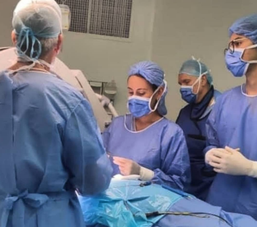

La neurocirugía es una rama de la medicina que se especializa en el tratamiento de enfermedades y lesiones del sistema nervioso central, que incluye el cerebro, la médula espinal y los nervios periféricos. Los neurocirujanos utilizan técnicas quirúrgicas para reparar o extirpar lesiones, tumores o malformaciones.
La neurocirugía es una especialidad compleja y desafiante que requiere un alto nivel de habilidad y experiencia. Los neurocirujanos deben tener un profundo conocimiento de la anatomía y la fisiología del sistema nervioso central, así como de las técnicas quirúrgicas.
Los neurocirujanos tratan una amplia gama de condiciones, que incluyen:
La neurocirugía es una especialidad en constante evolución, gracias a los avances tecnológicos y médicos. Los neurocirujanos utilizan cada vez más técnicas mínimamente invasivas, que reducen el riesgo de complicaciones y permiten una recuperación más rápida.
La neurocirugía es una especialidad esencial para el tratamiento de enfermedades y lesiones del sistema nervioso central. Los neurocirujanos juegan un papel fundamental en la mejora de la calidad de vida de los pacientes.

Dr. José Francisco
Rhayza Casimiro Niebrzydowski
Elba Cubillan
▼
 



Centro Médico Loira, Avenida Loira
Horarios
viernes de 2 a 5 pm
Terras Plaza Av. América, Caracas 1080, Miranda
Horarios
viernes de 2 a 5 pm